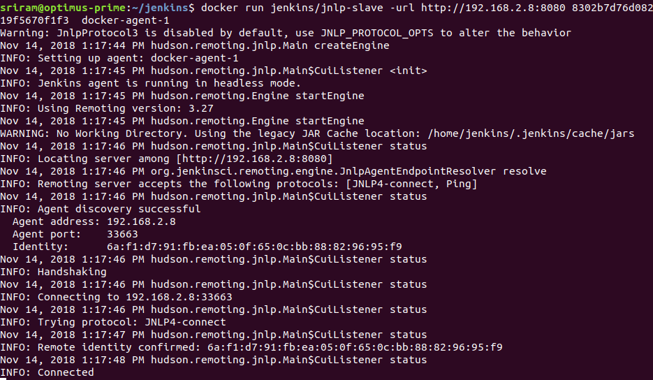
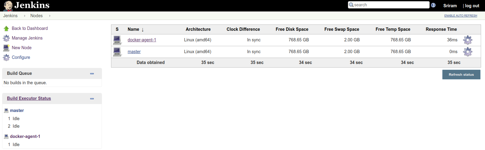
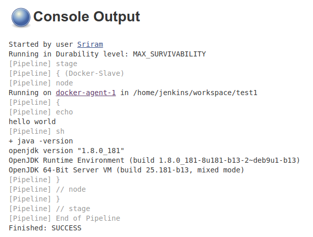

Jenkins-Docker
My use case is to run jenkins pipelines on docker build slaves. To achieve this we have to install Docker plugin. Docker plugin will integrate Jenkins with Docker. This docker plugin depends on Docker API plugin, so intall both the plugins. Restart is required for jenkins after installing these plugins.
Tip
Manage Jenkins -> Manage Plugins -> Docker plugin , Docker slave plugin and Docker API plugin
Once docker plugins are installed, restart jenkins master.
Jenkins depends on specific version of Java, in my case i have OpenJDK 10.0.2 installed in my system and jenkins needs java 1.8, hence i downloaded JDK 1.8 and running jenkins with that version of java.
Running Jenkins from war file
1 2 | export JAVA_HOME=/home/sriram/Downloads/jdk-8u191-linux-x64/jdk1.8.0_191 $JAVA_HOME/bin/java -jar jenkins.war & |
Once jenkins is fully up and running , we can see .jenkins folder inside user home directory /home/sriram/.jenkins/
1 2 3 4 5 6 7 8 9 10 11 12 13 14 15 16 17 18 19 20 21 22 23 24 25 26 27 28 29 30 | sriram@optimus-prime:~/.jenkins$ pwd /home/sriram/.jenkins sriram@optimus-prime:~/.jenkins$ ll total 104 drwxr-xr-x 12 sriram sriram 4096 nov 10 12:56 ./ drwxr-xr-x 44 sriram sriram 4096 nov 10 12:51 ../ -rw-r--r-- 1 sriram sriram 1644 nov 10 12:56 config.xml -rw-r--r-- 1 sriram sriram 156 nov 10 12:56 hudson.model.UpdateCenter.xml -rw-r--r-- 1 sriram sriram 370 nov 10 12:51 hudson.plugins.git.GitTool.xml -rw------- 1 sriram sriram 1712 nov 10 12:49 identity.key.enc -rw-r--r-- 1 sriram sriram 94 nov 10 12:49 jenkins.CLI.xml -rw-r--r-- 1 sriram sriram 7 nov 10 12:53 jenkins.install.InstallUtil.lastExecVersion -rw-r--r-- 1 sriram sriram 7 nov 10 12:53 jenkins.install.UpgradeWizard.state -rw-r--r-- 1 sriram sriram 179 nov 10 12:53 jenkins.model.JenkinsLocationConfiguration.xml -rw-r--r-- 1 sriram sriram 171 nov 10 12:49 jenkins.telemetry.Correlator.xml drwxr-xr-x 2 sriram sriram 4096 nov 10 12:49 jobs/ drwxr-xr-x 3 sriram sriram 4096 nov 10 12:49 logs/ -rw-r--r-- 1 sriram sriram 907 nov 10 12:56 nodeMonitors.xml drwxr-xr-x 2 sriram sriram 4096 nov 10 12:49 nodes/ drwxr-xr-x 75 sriram sriram 12288 nov 10 12:51 plugins/ -rw-r--r-- 1 sriram sriram 129 nov 10 12:55 queue.xml.bak -rw-r--r-- 1 sriram sriram 64 nov 10 12:49 secret.key -rw-r--r-- 1 sriram sriram 0 nov 10 12:49 secret.key.not-so-secret drwx------ 4 sriram sriram 4096 nov 10 12:53 secrets/ drwxr-xr-x 2 sriram sriram 4096 nov 10 12:50 updates/ drwxr-xr-x 2 sriram sriram 4096 nov 10 12:49 userContent/ drwxr-xr-x 3 sriram sriram 4096 nov 10 12:53 users/ drwxr-xr-x 11 sriram sriram 4096 nov 10 12:49 war/ drwxr-xr-x 2 sriram sriram 4096 nov 10 12:51 workflow-libs/ sriram@optimus-prime:~/.jenkins$ |
Adding Jenkins Node (Method-1)
This approach is a static method of using docker container as a build slave.
- create a node in jenkins with Launch method = Launch agent via Java Web Start
- Using the node name and secret key, spin up a container.
- This runing container will act as a build node for jenkins.
I have used jenkins docker slave image from cloudbees. jenkinsci/jnlp-slave
1 2 3 4 5 | syntax: docker run jenkins/jnlp-slave -url http://jenkins-server:port <secret> <agent name> example: docker run jenkins/jnlp-slave -url http://192.168.2.8:8080 8302b7d76d0828b629bdd1460d587268af64616fe464d69f34c9119f5670f1f3 docker-agent-1 |
  
Configure Docker Slaves for Jenkins (Method-2)
Go to Manage Jenkins -> Configure System -> you will now see Cloud option with a drop down to select Docker.
TO-DO
Add screenshots from Jenkins Configuration